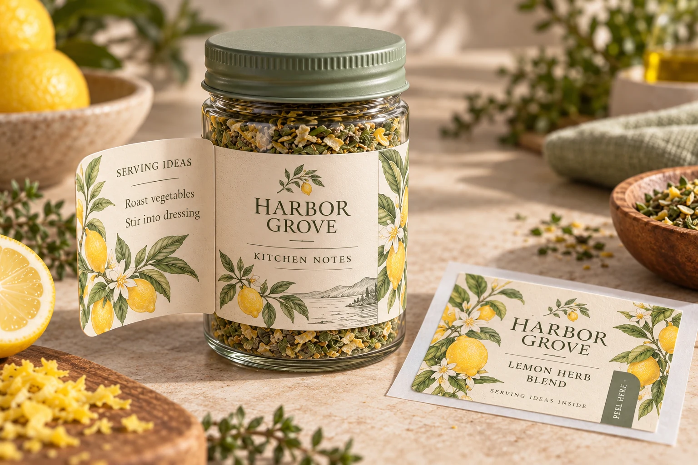

A small jar runs out of label space. The designer suggests a peel-and-reveal label. Purchasing asks for three layers, two printers send prices, and the cheaper quote looks easy to approve.
Then the actual copy arrives. One language block lands across the hinge. The opening tab takes another bite out of the panel. The quote covered fewer printed surfaces than the designer expected.
That is an illustrative purchasing scenario, not a customer case. It points to the decision that matters: buy an agreed map of usable printed panels, supported by a construction sample. A layer count alone is a poor specification.

First, say what the label must open
A peel-and-reveal label opens to expose more printed information while its base stays attached to the container. Some constructions close again for repeat reading. A booklet label adds a folded or bound insert when the information needs more pages.
Names vary. Resource Label Group includes peel-and-read, multi-ply and some peel-and-reseal products within its extended-content label family. So the word “reseal” does not settle the specification.
Ask one plain question: does lifting this label expose text, or open the food package? If the job is repeatedly closing a pouch opening, use the separate peel-and-reseal packaging checklist. That needs its own closure and product-protection assessment.
For this guide, the jar remains closed. Only the printed label opens.
Choose a format after the copy fits
For a short recipe or a modest amount of additional copy, ask the converter to assess a layered peel-back construction. For several language sections or longer instructions, compare a booklet. On a suitable cylindrical pack, an extended wrap may be another option.
These are different constructions. MCC's extended-content guide distinguishes multi-ply webs, overlapping wraps, booklets and folded formats. Its capabilities are industry examples, not confirmation that every printer supplies every format.
Do not select a booklet because it sounds more capable. First place the final copy at its intended reading size. If a conventional back label can do the job clearly, it deserves a quote too. A carton or neck tag may be more practical when the jar has little suitable label area. Optional recipes can sometimes live online; that does not establish where required retail information may legally appear.
Replace “three layers” with a numbered panel map
Ask for a construction drawing showing the finished label closed and fully opened. Number every surface the customer can read. For each, identify whether printing is included and how much area is actually available.
| Drawing item | What the buyer needs confirmed |
|---|---|
| Outer face | Visible copy, opening instruction and artwork orientation |
| Reverse of each opening leaf | Printed or unprinted; reading direction after opening |
| Attached base face | Available copy area and any fixed information |
| Hinge, folds and closure zones | Locations and areas unavailable for normal copy |
| Lift tab | How it is found, gripped and kept away from sticky contact |
| Complete assembly | Finished footprint, total thickness and intended opening direction |
A quoted “page” might mean a printed side, a leaf or a panel in an unfolded layout. Resolve that before comparing prices. There is no safe universal calculation from layers to usable pages.
The purchasing attachment should therefore say something like: “Supply printed panels P1–P3 according to drawing revision B; excluded zones shown on that drawing.” Let the supplier confirm the actual construction and panel count.
In the illustration below, the outer face, printed reverse and attached base have different jobs. It is a visual explanation, not a die line: request the supplier's dimensioned drawing for production.

Freeze copy ownership before print approval
Consider a hypothetical seasoning launch with two language versions and an optional recipe panel. Marketing owns the recipe. The brand's regulatory reviewer owns the market-specific text and its placement. Purchasing owns version quantities. The converter confirms production feasibility.
Those approvals should meet in one revision record. Otherwise a late translation change can invalidate several printed surfaces while everyone believes only one panel changed.
Use the food label layout planning guide to organize the information before fitting it into the extended construction. Have the responsible reviewer approve visibility, language and placement for the destination market. Extra hidden space is not permission to move any required statement inside.
Resource Label Group's booklet label overview shows why longer content can justify a multi-page format. Whether that format suits this particular food product still depends on the actual copy, pack and market review.
Compare the whole order, including the next revision
Send competing printers the same drawing revision, approved copy, quantities by artwork, package details and application conditions. Ask them to separate these costs:
- Print production, including the identified printed surfaces and finishing.
- Tooling, origination and any separate language-version setup.
- Construction samples, printed proofs and machine-trial material, stating what each represents.
- Freight, taxes and the agreed quantity tolerance.
- Repeat-order charges and what changes require fresh setup or approval.
Compare total landed cost for the same accepted specification. An attractive unit price may exclude an inside print pass or the sample needed to approve the job.
Also compare common multilingual stock with separate language versions. Common stock may simplify ordering, but a copy change can affect the whole shared inventory. Separate versions need their own stock control. Ask which content is likely to change during the order's consumption period before buying extra labels to reach a price break.
Give the sample three different jobs
A screen proof can check copy and orientation. It cannot establish opening feel or dispensing behavior. Agree these three approval stages, and record any difference between the sample and proposed production materials.
Read it. Review every numbered panel at finished size, closed and opened. Check sequence, orientation and copy against the approved revision. Make sure the user can find the tab without pulling the base off the jar.
Handle it. Apply the proposed construction to the actual container under the agreed conditions. After the supplier's specified conditioning period, open it as intended. If repeat closure is required, agree the number of cycles and acceptable condition in writing. Look for base lift, torn hinges, ink damage and a flap that will not lie down. Include the relevant cold, moisture or handling exposure in the trial plan; do not assume a dry-jar sample represents chilled service.
Run it. Trial the complete roll construction on the intended applicator. Confirm dispensing, tab clearance, label placement and premature opening. Use the roll core and outer-diameter guide alongside the machine's limits: extra thickness can change how many labels fit on a roll.
Record the sample revision, trial conditions, acceptance criteria and sign-off owner. Keep an approved physical reference for incoming inspection. A clean digital proof is one approval, not all three.
Put the panel map in the quote request
For a construction review, send your project details through the contact page: container photos and dimensions, final copy by language, quantity by version, desired opening behavior, storage conditions and hand or machine application. Attach drawings through the listed email or WhatsApp route; the form opens an email draft.
Ask the reply to identify usable panels, excluded zones, sample stages, quote inclusions and any construction limitations. That gives purchasing and production the same object to approve—and gives the cheaper quote a fair test.